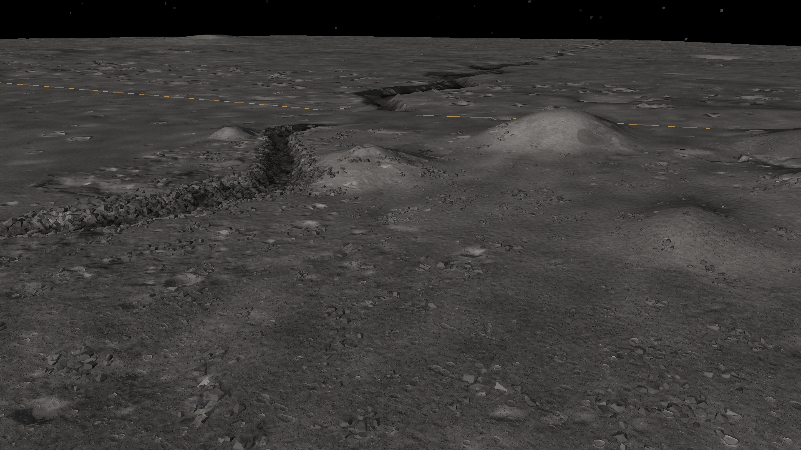
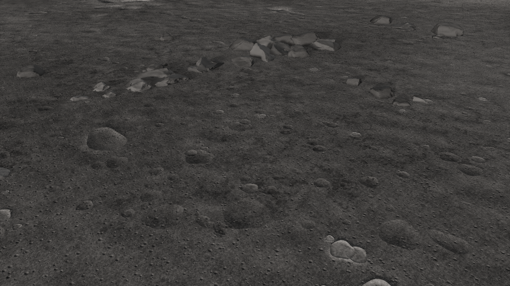
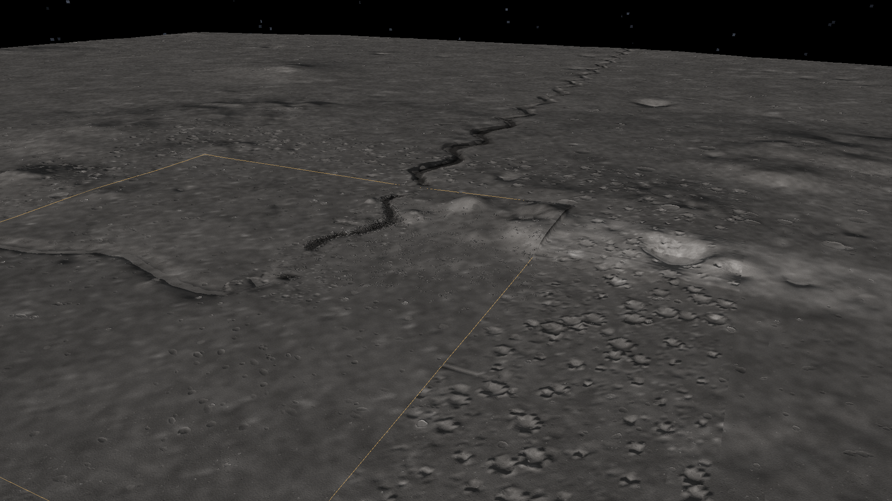

Marius Hills / sinuous rille
Measured mare and dome-field relief with an authored sinuous channel, pit, crossing spans and boulder-lined banks.
Measured and authored
The anchor is 14.05°N, 303.2°E. LOLA supplies the mare, low dome field and broad rille trough. The channel centreline was traced from that trough; wall depth, crossing spans, the pit, cone and small craters are authored. The native render adds presentation relief and photographic regolith/rock detail. No local pit DTM is bundled: its shape follows published measurements and imagery. The LROC team reports a pit about 58 × 49 m across and 40 m deep; see Marius Hills pit measurements. The pit is smaller than one source DEM pixel and will not resolve in the measured-base viewer.
The source is the 118 m LRO LOLA DEM (NASA/GSFC; USGS Astrogeology). Its 62.5 m local grid is resampling, not new measurement detail. The original multi-level regional payload is included with sanitized provenance.
Native game views






Capture hashes and stage · The sidecars preserve camera, terrain counters and map hashes. They describe these archived views, not current performance.
Source heightmap and hillshade

Download original regional elevation payload · Heightfield format · Moon source overview